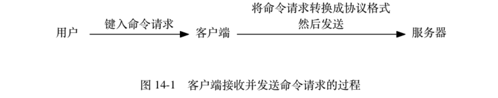
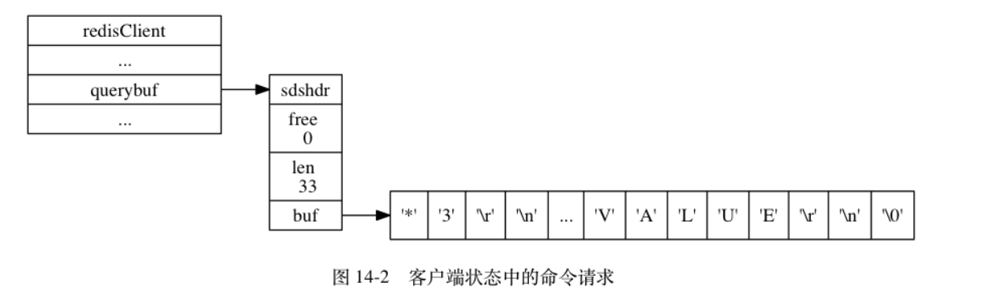
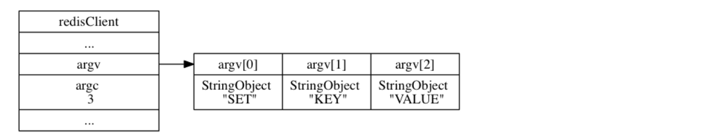
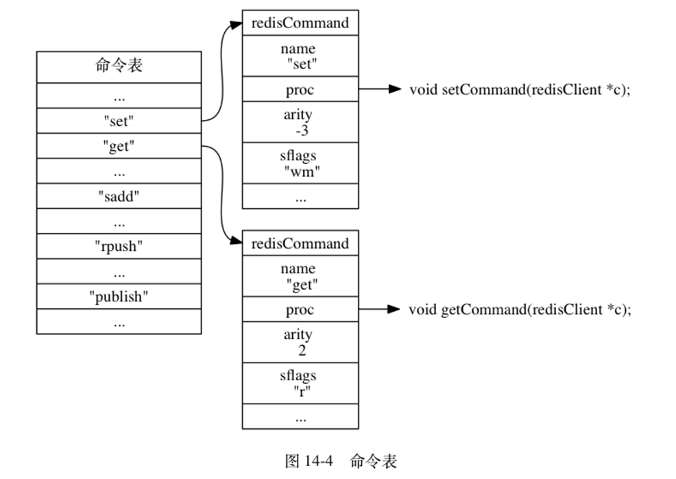
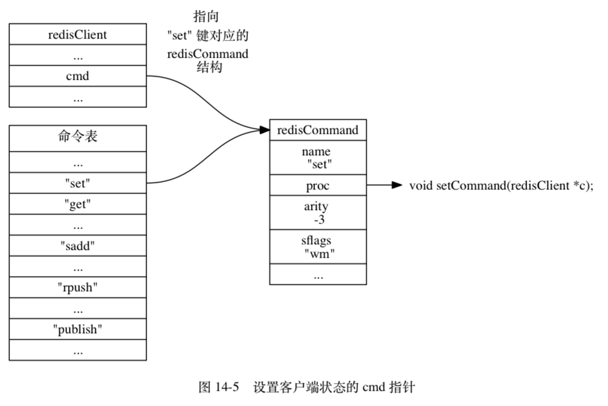
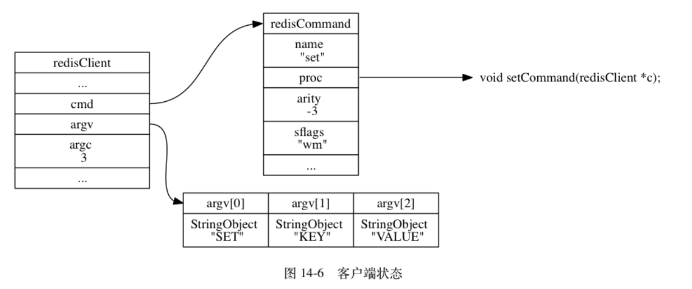
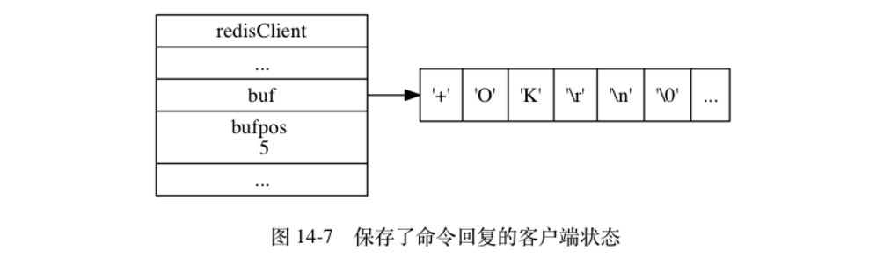
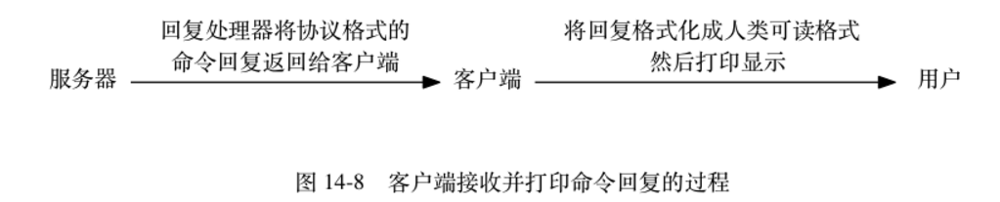

2017-11-14 BoobooWei
命令请求的执行过程
一个命令请求从发送到获得回复的过程中， 客户端和服务器需要完成一系列操作。
举个例子， 如果我们使用客户端执行以下命令：
redis> SET KEY VALUE |
那么从客户端发送 SET KEY VALUE 命令到获得回复 OK 期间， 客户端和服务器共需要执行以下操作：
- 客户端向服务器发送命令请求
SET KEY VALUE。 - 服务器接收并处理客户端发来的命令请求
SET KEY VALUE， 在数据库中进行设置操作， 并产生命令回复OK。 - 服务器将命令回复
OK发送给客户端。 - 客户端接收服务器返回的命令回复
OK， 并将这个回复打印给用户观看。
本节接下来的内容将对这些操作的执行细节进行补充， 详细地说明客户端和服务器在执行命令请求时所做的各种工作。
发送命令请求
Redis 服务器的命令请求来自 Redis 客户端， 当用户在客户端中键入一个命令请求时， 客户端会将这个命令请求转换成协议格式， 然后通过连接到服务器的套接字， 将协议格式的命令请求发送给服务器， 如图 14-1 所示。

举个例子， 假设客户端执行命令：
SET KEY VALUE |
那么客户端会将这个命令转换成协议：
*3\r\n$3\r\nSET\r\n$3\r\nKEY\r\n$5\r\nVALUE\r\n |
然后将这段协议内容发送给服务器。
booboo笔记
- 所谓协议就是约定就是一种语言，人类是强大的哈，尤其是寻找规律的能力，看多了机器代码的协议自然能找到规律，破解出来，比如这里的如果你截获了redis客户端和服务端发送的这段信息
*3\r\n$3\r\nSET\r\n$3\r\nKEY\r\n$5\r\nVALUE\r\n，你能破解吗？\r\n表示分割，那么去除分割符就是:
协议 解释 *3 信息中一共包含了3个单词 $3 第一个单词有3个字符 SET 第一个单词是SET $3 第二个单词有3个字符 KEY 第二个单词是KEY $5 第三个单词有5个单词 VALUE 第三个单词是VALUE
了解了所谓的redis协议，我们也能说redis的语言了，比如用人话说的“往redis中存放name=tom”，翻译成redis客户端的语言是
set name tom，翻译成redis服务器的语言是*3\n\r$3set\n\r$4\n\rname\n\r$3\n\rtom命令不区分大小写，key和value区分大小写
OK
127.0.0.1:6380> set NAME TOM
OK
127.0.0.1:6380> get name
"tom"
127.0.0.1:6380> get NAME
"TOM"
读取命令请求
当客户端与服务器之间的连接套接字因为客户端的写入而变得可读时， 服务器将调用命令请求处理器来执行以下操作：
- 读取套接字中协议格式的命令请求， 并将其保存到客户端状态的输入缓冲区里面。
- 对输入缓冲区中的命令请求进行分析， 提取出命令请求中包含的命令参数， 以及命令参数的个数， 然后分别将参数和参数个数保存到客户端状态的
argv属性和argc属性里面。 - 调用命令执行器， 执行客户端指定的命令。
继续用上一个小节的 SET 命令为例子， 图 14-2 展示了程序将命令请求保存到客户端状态的输入缓冲区之后， 客户端状态的样子。

之后， 分析程序将对输入缓冲区中的协议：
*3\r\n$3\r\nSET\r\n$3\r\nKEY\r\n$5\r\nVALUE\r\n |
进行分析， 并将得出的分析结果保存到客户端状态的 argv 属性和 argc 属性里面， 如图 14-3 所示。

之后， 服务器将通过调用命令执行器来完成执行命令所需的余下步骤， 以下几个小节将分别介绍命令执行器所执行的工作。
booboo笔记
- 客户端通过redis协议传输过来的内容会首先保存在redisServer—>clients—>redisClient—>querybuf中，
- 这里注意了输入缓冲指的是redis服务器接收客户端命令的缓冲，是在服务器端哦
- 通过对querybuf的内容解析将对应的命令和参数以及单词的个数存放到redisServer—>clients—>redisClient—>argv—>argc
命令执行器（1）：查找命令实现
命令执行器要做的第一件事就是根据客户端状态的 argv[0] 参数， 在命令表（command table）中查找参数所指定的命令， 并将找到的命令保存到客户端状态的 cmd 属性里面。
命令表是一个字典， 字典的键是一个个命令名字，比如 "set" 、 "get" 、 "del" ，等等； 而字典的值则是一个个 redisCommand 结构， 每个 redisCommand 结构记录了一个 Redis 命令的实现信息， 表 14-1 记录了这个结构的各个主要属性的类型和作用。
表 14-1 redisCommand 结构的主要属性
| 属性名 | 类型 | 作用 |
|---|---|---|
name |
char * |
命令的名字，比如 "set" 。 |
proc |
redisCommandProc * |
函数指针，指向命令的实现函数，比如 setCommand 。 redisCommandProc 类型的定义为typedef void redisCommandProc(redisClient *c); 。 |
arity |
int |
命令参数的个数，用于检查命令请求的格式是否正确。 如果这个值为负数 -N ，那么表示参数的数量大于等于 N 。 注意命令的名字本身也是一个参数， 比如说 SET msg "helloworld" 命令的参数是 "SET" 、 "msg" 、 "hello world" ， 而不仅仅是 "msg" 和 "hello world"。 |
sflags |
char * |
字符串形式的标识值， 这个值记录了命令的属性， 比如这个命令是写命令还是读命令， 这个命令是否允许在载入数据时使用， 这个命令是否允许在 Lua 脚本中使用， 等等。 |
flags |
int |
对 sflags 标识进行分析得出的二进制标识， 由程序自动生成。 服务器对命令标识进行检查时使用的都是 flags 属性而不是 sflags 属性， 因为对二进制标识的检查可以方便地通过 & 、 ^ 、 ~ 等操作来完成。 |
calls |
long long |
服务器总共执行了多少次这个命令。 |
milliseconds |
long long |
服务器执行这个命令所耗费的总时长。 |
表 14-2 列出了 sflags 属性可以使用的标识值， 以及这些标识的意义。
表 14-2 sflags 属性的标识
| 标识 | 意义 | 带有这个标识的命令 |
|---|---|---|
w |
这是一个写入命令，可能会修改数据库。 | SET 、 RPUSH 、 DEL ，等等。 |
r |
这是一个只读命令，不会修改数据库。 | GET 、 STRLEN 、 EXISTS ，等等。 |
m |
这个命令可能会占用大量内存， 执行之前需要先检查服务器的内存使用情况， 如果内存紧缺的话就禁止执行这个命令。 | SET 、 APPEND 、 RPUSH 、 LPUSH 、 SADD、 SINTERSTORE ，等等。 |
a |
这是一个管理命令。 | SAVE 、 BGSAVE 、 SHUTDOWN ，等等。 |
p |
这是一个发布与订阅功能方面的命令。 | PUBLISH 、 SUBSCRIBE 、 PUBSUB ，等等。 |
s |
这个命令不可以在 Lua 脚本中使用。 | BRPOP 、 BLPOP 、 BRPOPLPUSH 、 SPOP，等等。 |
R |
这是一个随机命令， 对于相同的数据集和相同的参数， 命令返回的结果可能不同。 | SPOP 、 SRANDMEMBER 、 SSCAN 、RANDOMKEY ，等等。 |
S |
当在 Lua 脚本中使用这个命令时， 对这个命令的输出结果进行一次排序， 使得命令的结果有序。 | SINTER 、 SUNION 、 SDIFF 、 SMEMBERS、 KEYS ，等等。 |
l |
这个命令可以在服务器载入数据的过程中使用。 | INFO 、 SHUTDOWN 、 PUBLISH ，等等。 |
t |
这是一个允许从服务器在带有过期数据时使用的命令。 | SLAVEOF 、 PING 、 INFO ，等等。 |
M |
这个命令在监视器（monitor）模式下不会自动被传播（propagate）。 | EXEC |
图 14-4 展示了命令表的样子， 并且以 SET 命令和 GET 命令作为例子， 展示了 redisCommand 结构：
- SET 命令的名字为
"set"， 实现函数为setCommand； 命令的参数个数为-3， 表示命令接受三个或以上数量的参数； 命令的标识为"wm"， 表示 SET 命令是一个写入命令， 并且在执行这个命令之前， 服务器应该对占用内存状况进行检查， 因为这个命令可能会占用大量内存。 - GET 命令的名字为
"get"， 实现函数为getCommand函数； 命令的参数个数为2， 表示命令只接受两个参数； 命令的标识为"r"， 表示这是一个只读命令。

继续之前 SET 命令的例子， 当程序以图 14-3 中的 argv[0] 作为输入， 在命令表中进行查找时， 命令表将返回 "set" 键所对应的 redisCommand 结构， 客户端状态的 cmd 指针会指向这个 redisCommand 结构， 如图 14-5 所示。

命令名字的大小写不影响命令表的查找结果
因为命令表使用的是大小写无关的查找算法， 无论输入的命令名字是大写、小写或者混合大小写， 只要命令的名字是正确的， 就能找到相应的 redisCommand 结构。
比如说， 无论用户输入的命令名字是 "SET" 、 "set" 、 "SeT" 又或者 "sEt" ， 命令表返回的都是同一个 redisCommand 结构。
这也是 Redis 客户端可以发送不同大小写的命令， 并且获得相同执行结果的原因：
# 以下四个命令的执行效果完全一样 |
booboo笔记
- 当分析出命令为set后，就会到命令字典去查找set命令的用法，将查找结果存放于redisServer—>clients—>redisClient—>cmd（redisCommand）
- 命令不区分大小写
命令执行器（2）：执行预备操作
到目前为止， 服务器已经将执行命令所需的命令实现函数（保存在客户端状态的 cmd 属性）、参数（保存在客户端状态的 argv 属性）、参数个数（保存在客户端状态的 argc 属性）都收集齐了， 但是在真正执行命令之前， 程序还需要进行一些预备操作， 从而确保命令可以正确、顺利地被执行， 这些操作包括：
- 检查客户端状态的
cmd指针是否指向NULL， 如果是的话， 那么说明用户输入的命令名字找不到相应的命令实现， 服务器不再执行后续步骤， 并向客户端返回一个错误。 - 根据客户端
cmd属性指向的redisCommand结构的arity属性， 检查命令请求所给定的参数个数是否正确， 当参数个数不正确时， 不再执行后续步骤， 直接向客户端返回一个错误。 比如说， 如果redisCommand结构的arity属性的值为-3， 那么用户输入的命令参数个数必须大于等于3个才行。 - 检查客户端是否已经通过了身份验证， 未通过身份验证的客户端只能执行 AUTH 命令， 如果未通过身份验证的客户端试图执行除 AUTH 命令之外的其他命令， 那么服务器将向客户端返回一个错误。
- 如果服务器打开了
maxmemory功能， 那么在执行命令之前， 先检查服务器的内存占用情况， 并在有需要时进行内存回收， 从而使得接下来的命令可以顺利执行。 如果内存回收失败， 那么不再执行后续步骤， 向客户端返回一个错误。 - 如果服务器上一次执行 BGSAVE 命令时出错， 并且服务器打开了
stop-writes-on-bgsave-error功能， 而且服务器即将要执行的命令是一个写命令， 那么服务器将拒绝执行这个命令， 并向客户端返回一个错误。 - 如果客户端当前正在用 SUBSCRIBE 命令订阅频道， 或者正在用 PSUBSCRIBE 命令订阅模式， 那么服务器只会执行客户端发来的 SUBSCRIBE 、 PSUBSCRIBE 、 UNSUBSCRIBE 、 PUNSUBSCRIBE 四个命令， 其他别的命令都会被服务器拒绝。
- 如果服务器正在进行数据载入， 那么客户端发送的命令必须带有
l标识（比如 INFO 、 SHUTDOWN 、 PUBLISH ，等等）才会被服务器执行， 其他别的命令都会被服务器拒绝。 - 如果服务器因为执行 Lua 脚本而超时并进入阻塞状态， 那么服务器只会执行客户端发来的 SHUTDOWN nosave 命令和 SCRIPT KILL 命令， 其他别的命令都会被服务器拒绝。
- 如果客户端正在执行事务， 那么服务器只会执行客户端发来的 EXEC 、 DISCARD 、 MULTI 、 WATCH 四个命令， 其他命令都会被放进事务队列中。
- 如果服务器打开了监视器功能， 那么服务器会将要执行的命令和参数等信息发送给监视器。
当完成了以上预备操作之后， 服务器就可以开始真正执行命令了。
注意
以上只列出了服务器在单机模式下执行命令时的检查操作， 当服务器在复制或者集群模式下执行命令时， 预备操作还会更多一些。
booboo笔记
执行预备的操作可以理解为在做一下检查：
- 认证通过了吗？
- 命令存在吗？
- 命令语法对吗？
- 内存够用吗？
- 当前进程是否被阻塞？
命令执行器（3）：调用命令的实现函数
在前面的操作中， 服务器已经将要执行命令的实现保存到了客户端状态的 cmd 属性里面， 并将命令的参数和参数个数分别保存到了客户端状态的 argv 属性和 argc 属性里面， 当服务器决定要执行命令时， 它只要执行以下语句就可以了：
// client 是指向客户端状态的指针 |
因为执行命令所需的实际参数都已经保存到客户端状态的 argv 属性里面了， 所以命令的实现函数只需要一个指向客户端状态的指针作为参数即可。
继续以之前的 SET 命令为例子， 图 14-6 展示了客户端包含了命令实现、参数和参数个数的样子。

对于这个例子来说， 执行语句：
client->cmd->proc(client); |
等于执行语句：
setCommand(client); |
被调用的命令实现函数会执行指定的操作， 并产生相应的命令回复， 这些回复会被保存在客户端状态的输出缓冲区里面（buf 属性和 reply属性）， 之后实现函数还会为客户端的套接字关联命令回复处理器， 这个处理器负责将命令回复返回给客户端。
对于前面 SET 命令的例子来说， 函数调用 setCommand(client); 将产生一个 "+OK\r\n" 回复， 这个回复会被保存到客户端状态的 buf 属性里面， 如图 14-7 所示。

booboo笔记
- 执行命令的函数为redisCommand结构，调用的命令参数直接读取redisClient中的argv数组中的参数即可
- 命令执行后的结果保存在redisServer—>clients—>redisClient—>buf和bufpos中
命令执行器（4）：执行后续工作
在执行完实现函数之后， 服务器还需要执行一些后续工作：
- 如果服务器开启了慢查询日志功能， 那么慢查询日志模块会检查是否需要为刚刚执行完的命令请求添加一条新的慢查询日志。
- 根据刚刚执行命令所耗费的时长， 更新被执行命令的
redisCommand结构的milliseconds属性， 并将命令的redisCommand结构的calls计数器的值增一。 - 如果服务器开启了 AOF 持久化功能， 那么 AOF 持久化模块会将刚刚执行的命令请求写入到 AOF 缓冲区里面。
- 如果有其他从服务器正在复制当前这个服务器， 那么服务器会将刚刚执行的命令传播给所有从服务器。
当以上操作都执行完了之后， 服务器对于当前命令的执行到此就告一段落了， 之后服务器就可以继续从文件事件处理器中取出并处理下一个命令请求了。
booboo笔记
命令执行完成后，还需要做一下事情：
- 判断是否为慢查询
- 更新该命令执行的次数
- 是否需要AOF固化
- 是否需要replication给其他redis服务器
将命令回复发送给客户端
前面说过， 命令实现函数会将命令回复保存到客户端的输出缓冲区里面， 并为客户端的套接字关联命令回复处理器， 当客户端套接字变为可写状态时， 服务器就会执行命令回复处理器， 将保存在客户端输出缓冲区中的命令回复发送给客户端。
当命令回复发送完毕之后， 回复处理器会清空客户端状态的输出缓冲区， 为处理下一个命令请求做好准备。
以图 14-7 所示的客户端状态为例子， 当客户端的套接字变为可写状态时， 命令回复处理器会将协议格式的命令回复 "+OK\r\n" 发送给客户端。
客户端接收并打印命令回复
当客户端接收到协议格式的命令回复之后， 它会将这些回复转换成人类可读的格式， 并打印给用户观看（假设我们使用的是 Redis 自带的 redis-cli 客户端）， 如图 14-8 所示。

继续以之前的 SET 命令为例子， 当客户端接到服务器发来的 "+OK\r\n" 协议回复时， 它会将这个回复转换成 "OK\n" ， 然后打印给用户看：
redis> SET KEY VALUE |
以上就是 Redis 客户端和服务器执行命令请求的整个过程了。